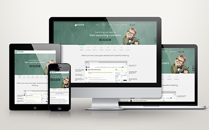
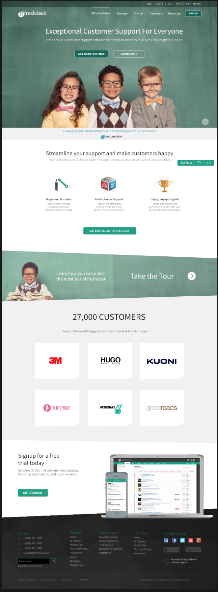
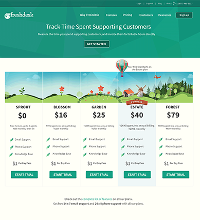
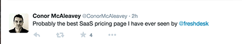
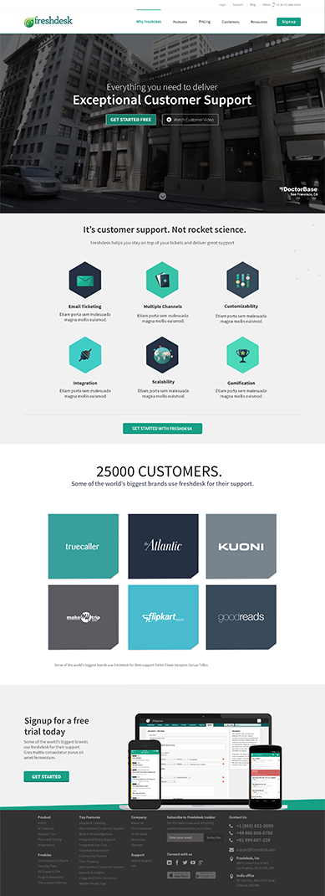
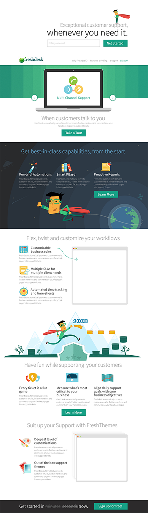
Save The Hacker Website
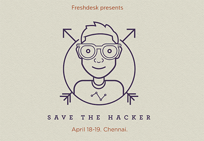
Hacker Dude Illustration
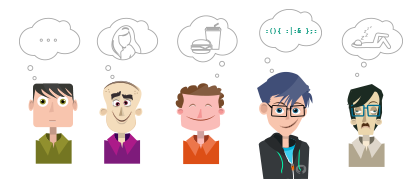
Hacker vs IT Guy Infographic
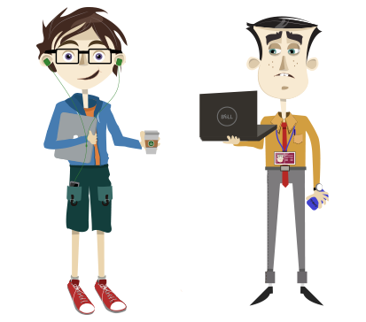
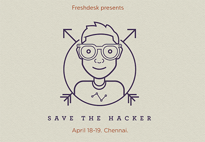
Hacker Dude Illustration
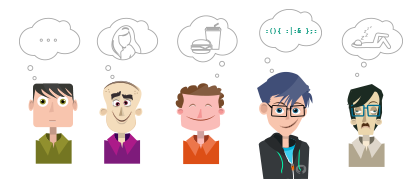
Hacker vs IT Guy Infographic
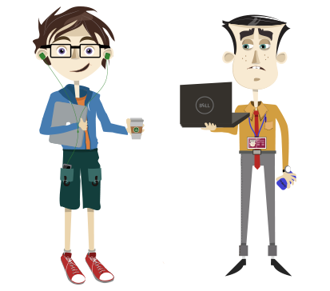
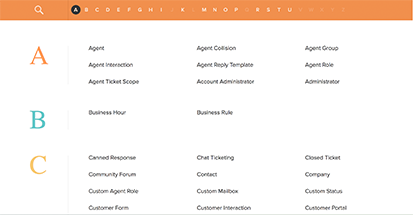

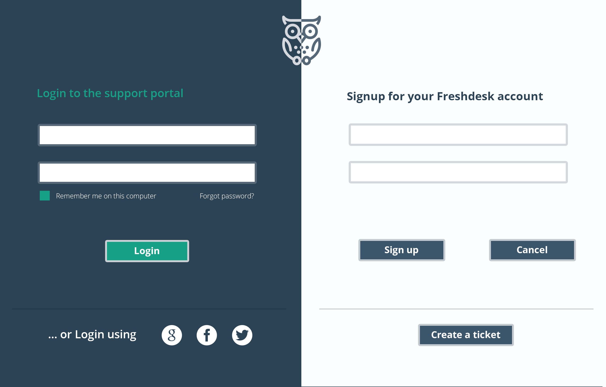
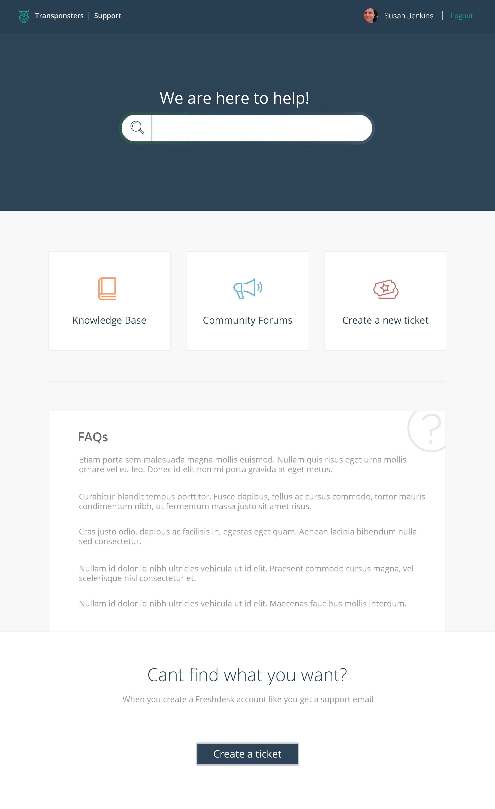
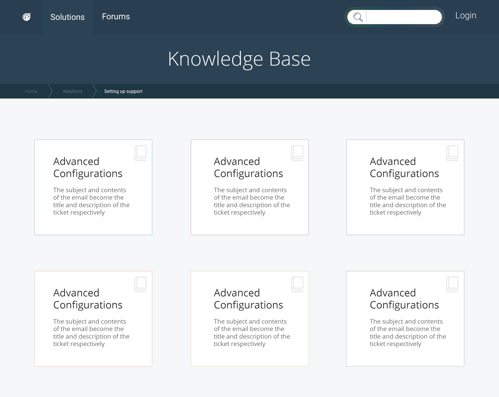
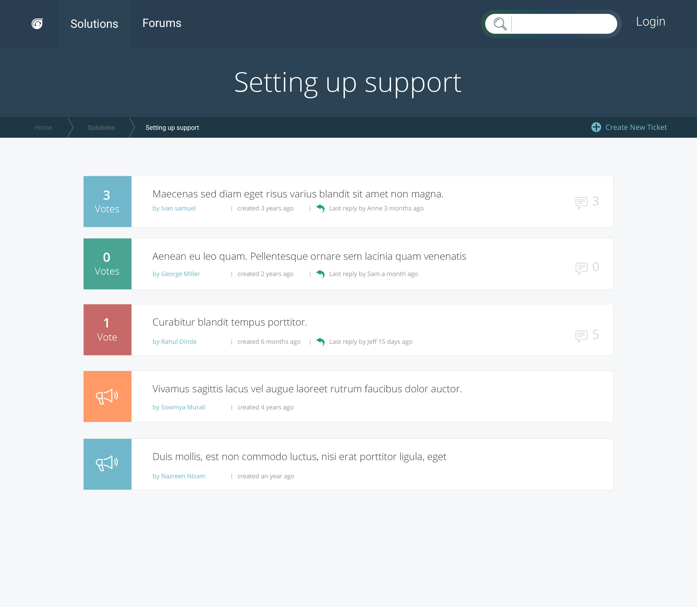
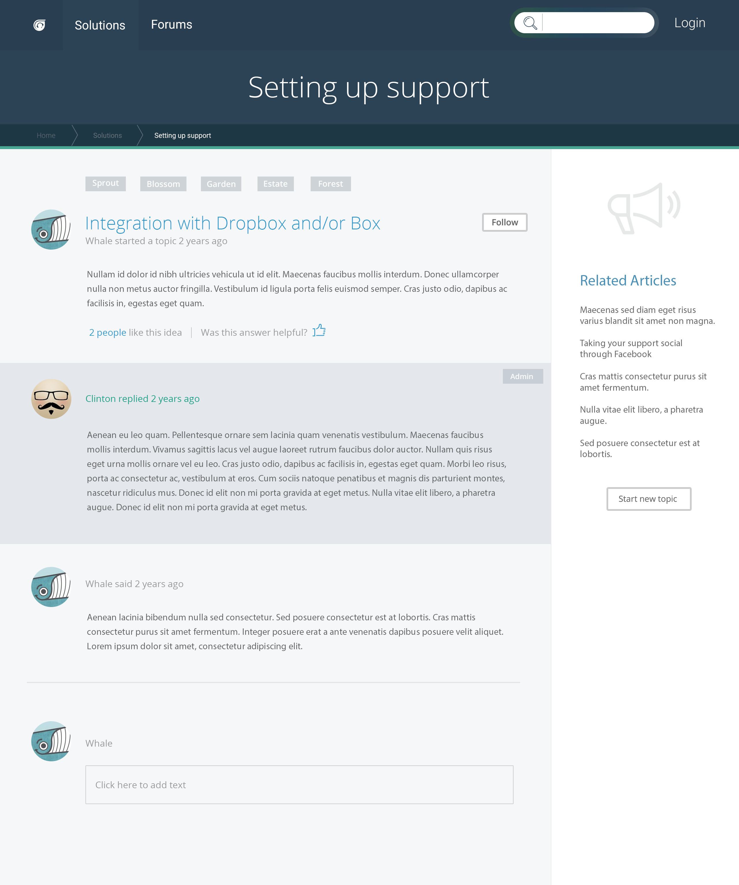
A Time Use Data collection tool that is context aware, effortless for the respondent and saves data in a research-convenient format. Samay Lekha is a smartphone application which attempts to enable entering data as easy as any daily routine for the respondent.
Database
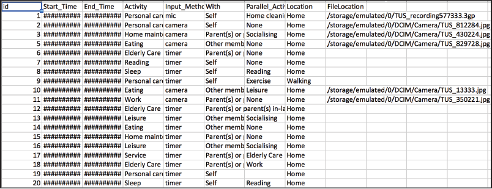
Researcher gets a datasheet from each respondent - in the Time Diary Format Download app from here
Database
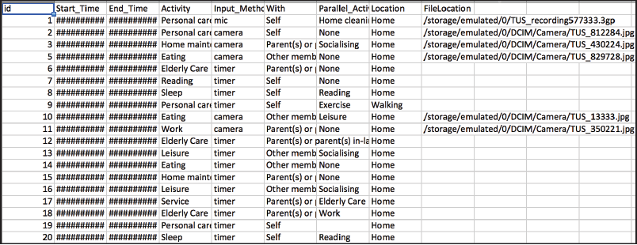
Researcher gets a datasheet from each respondent - in the Time Diary Format Download app from here
A Collaborative project IAD - TU Darmstadt, Germany and IDC, IIT Bombay
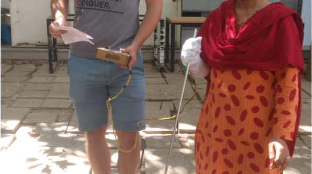
Wearable to guide a visually impaired person to the bus stand.
A simple glove which gives feedback in the form of vibration on inner forearm above wrist. The wearable is in the form of a glove for ease of wearing during testing to keep the vibrator fastenend in place. The feedback was generated by a wired controlled that we built using gates to give 5 types of vibration combinations.
Concept
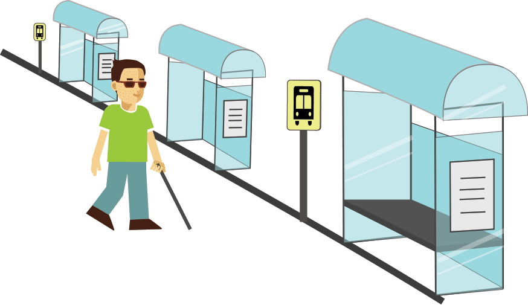
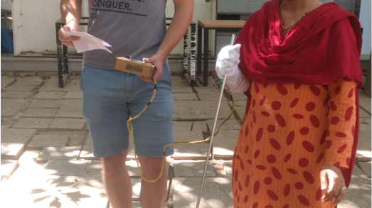
Wearable to guide a visually impaired person to the bus stand.
A simple glove which gives feedback in the form of vibration on inner forearm above wrist. The wearable is in the form of a glove for ease of wearing during testing to keep the vibrator fastenend in place. The feedback was generated by a wired controlled that we built using gates to give 5 types of vibration combinations.
Concept
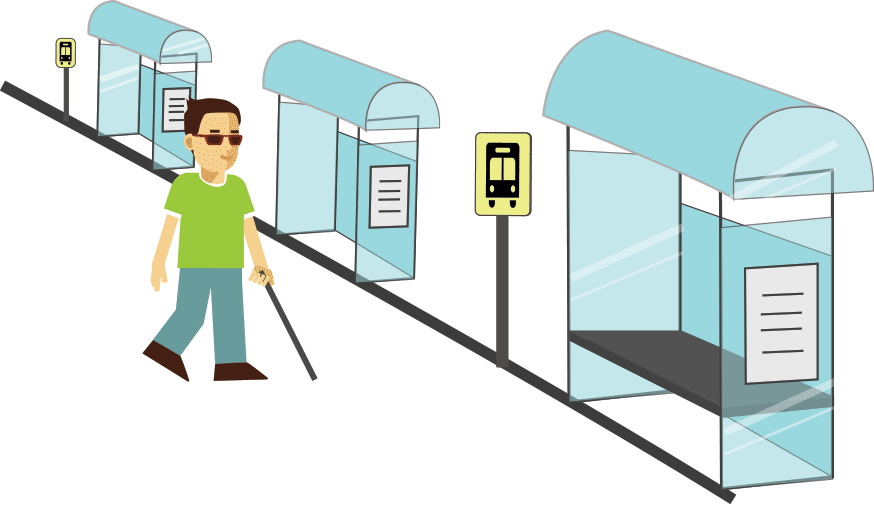
Navigation for visually impaired users based on audio-instructions of landmarks and preferable paths, given by visually impaired people. (Ongoing)
This project aims at comparing traditional maps made by sighted people with talk back with instructions combined with sound of specific landmarks and 3D binaural environment audio to see which one has less cognitive load on a user and allows navigation with less error deviations. The idea is to observe whether these methods can create an allocentric spatial perspective in the users and with time the unavailability of any cues should also not be a problem since the information is embedded in their memory. An allocentric representation of space would allow one to mentally explore the environment, as opposed to physically explore it, and would consequently allow for reorganization of itineraries such as alternative routes or shortcuts. Binaural Audio
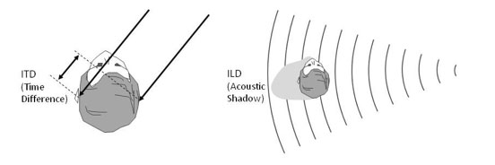
This project aims at comparing traditional maps made by sighted people with talk back with instructions combined with sound of specific landmarks and 3D binaural environment audio to see which one has less cognitive load on a user and allows navigation with less error deviations. The idea is to observe whether these methods can create an allocentric spatial perspective in the users and with time the unavailability of any cues should also not be a problem since the information is embedded in their memory. An allocentric representation of space would allow one to mentally explore the environment, as opposed to physically explore it, and would consequently allow for reorganization of itineraries such as alternative routes or shortcuts. Binaural Audio
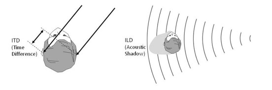
A comparative study between India and Germany by Nazreen and Anjana
In this project we present a study of Whatsapp, an instant communication channel smartphone application. Through our interviews with participants, we develop anthropologist Tim Ingold’s notion of dwelling, and discuss how use of Whatsapp is constitutive and essentiality of a student life. We investigate student habits and how the features supported by Whatsapp seamlessly integrate into the daily life cycle of students.
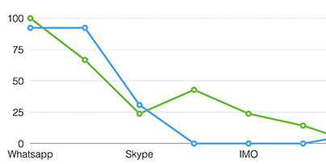
The percentage of OTT(Over The Top) applications in India and Germany
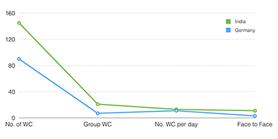
No. of WC - number of whatsapp chats, Group WC - Group whatsapp chat, No. of WC per day - number of whatsapp chats per day, Face to face - whatsapp chats with people met face to face the same day. The main objective of this paper:
To evaluate the degree of the impact of the use of Whatsapp Messenger
To determine the relationship between the use of the application and social bond construction
To determine how whatsapp helps in the daily life of students in technical institutions of both the countries.
The report can be downloaded from
here
In this project we present a study of Whatsapp, an instant communication channel smartphone application. Through our interviews with participants, we develop anthropologist Tim Ingold’s notion of dwelling, and discuss how use of Whatsapp is constitutive and essentiality of a student life. We investigate student habits and how the features supported by Whatsapp seamlessly integrate into the daily life cycle of students.
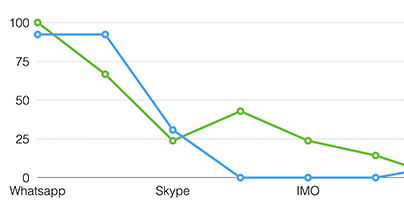
The percentage of OTT(Over The Top) applications in India and Germany
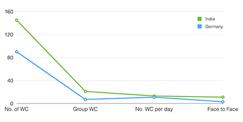
No. of WC - number of whatsapp chats, Group WC - Group whatsapp chat, No. of WC per day - number of whatsapp chats per day, Face to face - whatsapp chats with people met face to face the same day. The main objective of this paper:
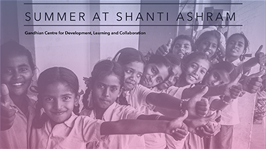 Participatory Rural Appraisal
PRA approach aims to incorporate the knowledge and opinions of rural people in the planning and management of development projects and programmes. In 2 villages near Coimbatore PRA was conducted to determine the amenities that the required and their location.

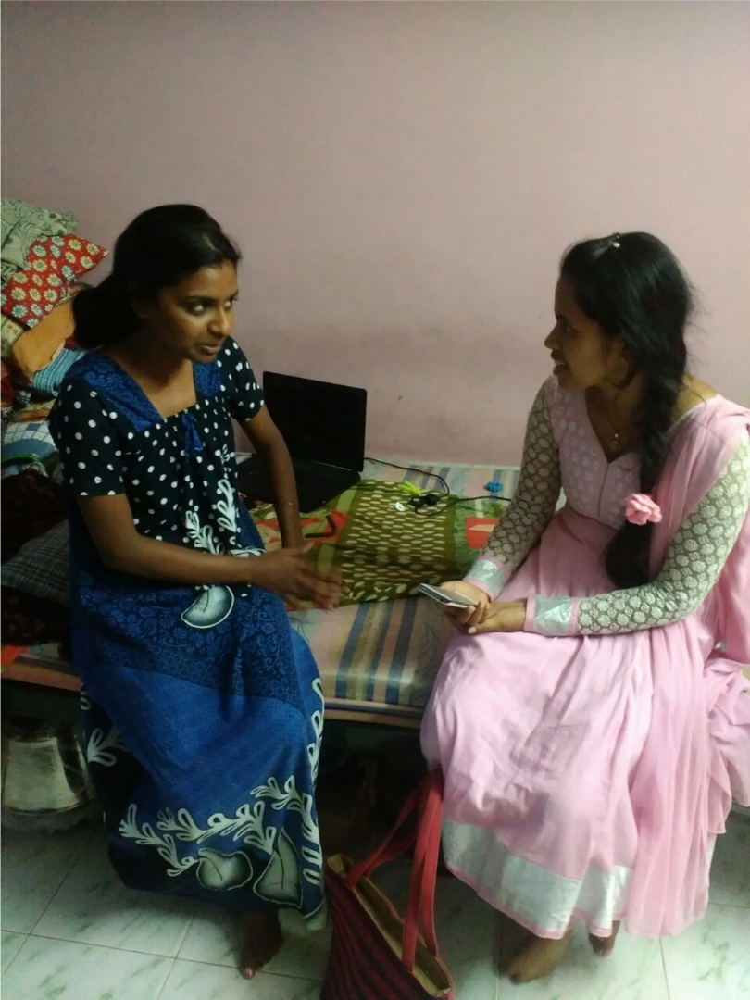
Toilets location determined by PRA to be between Both the villages Scholarship Brochure Design
The brochure was designed based on content covering the 15 years of consistent scholarship programme and the various schemes introduced during the period by the Ashram.
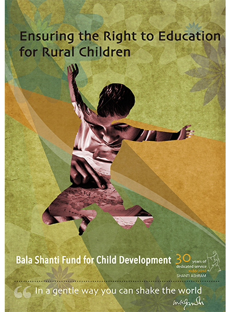
User Studies
The sample consists of 30 youths, between the age group of 18 - 22 hailing from rural, urban and peri-urban (Rurban) Goal
To find out the density of penetration of smartphones amongst young adults. This is expected to fetch us patterns about what they use phones for - calling, messaging, education, business, entertainment, calculations and mainly medical purposes.
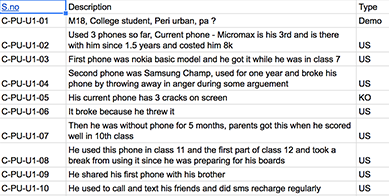
Key Findings
A user has a method to use the micromax phone despite the phone being broken and having touchpad problems Friends discuss about apps, "new app irunda send pannuda" A user downloaded hammer VPN - an app that can track wifi and passwords and help one use neighbour's wifi stealthily A lot of touch screens are broken and cannot be repaired. The new phones are becoming use and throw while old basic model handsets are still in working condition after years A lot of people working, spend time after dinner till they sleep on phones and internet
Smartphone adoption by low-literate users in India
A contextual interview involving 110 users spread across Mumbai (City), Wai (Town), and Menavali (Rural) was conducted by the students of Interaction Design 2015-17 batch in Maharashtra, India.
Year: August, 2015
Time Period: 2 weeks
Number of researchers: 14 design students
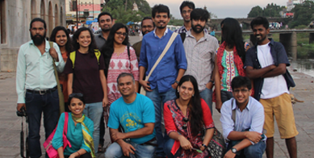
Location: urban, suburban and rural areas in the states of Maharashtra and Madhya Pradesh in India (Locations were chosen to make sure the research happened in both urban and rural areas. )
Education: Less than or equal to 12th standard
Occupation: shop owner, rickshaw and truck driver, tailor, cattle owner, homemaker, peon, etcetera.
Semi-structured interviews were conducted first, followed by analysis of the interview which was later transcribed. Then affinity mapping of the statements yielded findings
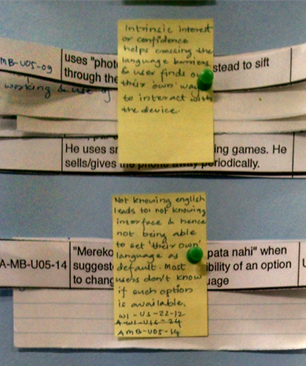
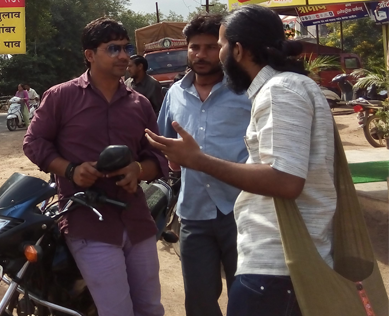
Key Findings: observations in purchase decision making patterns, social influences, usage deterrents, comparisons between physical and digital usage, usage of PINs and passwords, E-commerce, Risk assessment and mitigation, the concept of privacy, designated app usage among others. The entire study and its findings have been consolidated into three papers, which have been submitted to CHI 2016 conference and can be found in Media and Entertainment, Usable Security, and Whatsapp.
A contextual interview involving 110 users spread across Mumbai (City), Wai (Town), and Menavali (Rural) was conducted by the students of Interaction Design 2015-17 batch in Maharashtra, India.
Year: August, 2015
Time Period: 2 weeks
Number of researchers: 14 design students
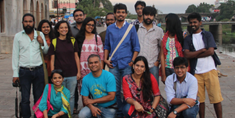
Location: urban, suburban and rural areas in the states of Maharashtra and Madhya Pradesh in India (Locations were chosen to make sure the research happened in both urban and rural areas. )
Education: Less than or equal to 12th standard
Occupation: shop owner, rickshaw and truck driver, tailor, cattle owner, homemaker, peon, etcetera.
Semi-structured interviews were conducted first, followed by analysis of the interview which was later transcribed. Then affinity mapping of the statements yielded findings
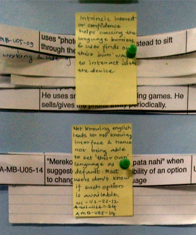
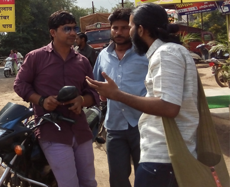
Key Findings: observations in purchase decision making patterns, social influences, usage deterrents, comparisons between physical and digital usage, usage of PINs and passwords, E-commerce, Risk assessment and mitigation, the concept of privacy, designated app usage among others. The entire study and its findings have been consolidated into three papers, which have been submitted to CHI 2016 conference and can be found in Media and Entertainment, Usable Security, and Whatsapp.